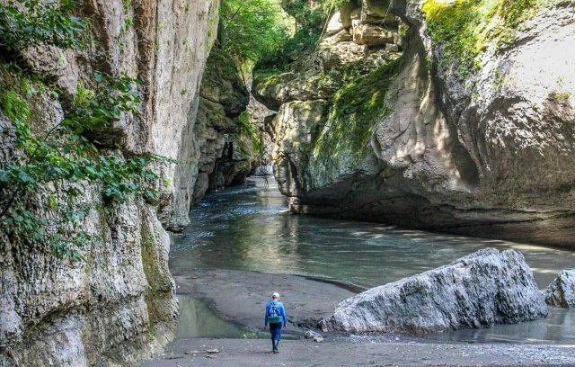
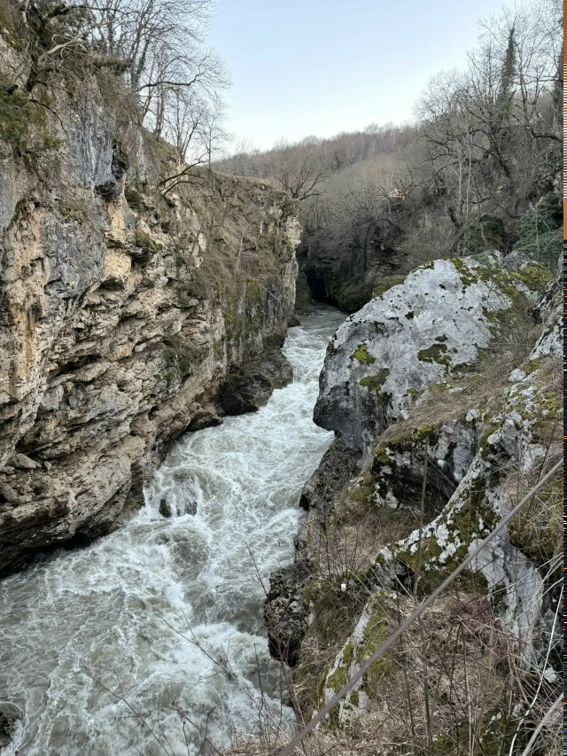
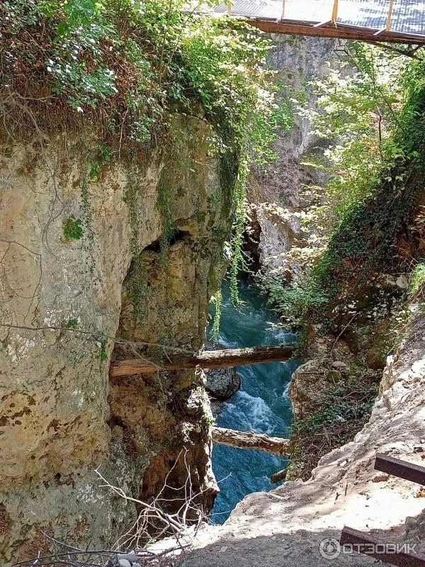
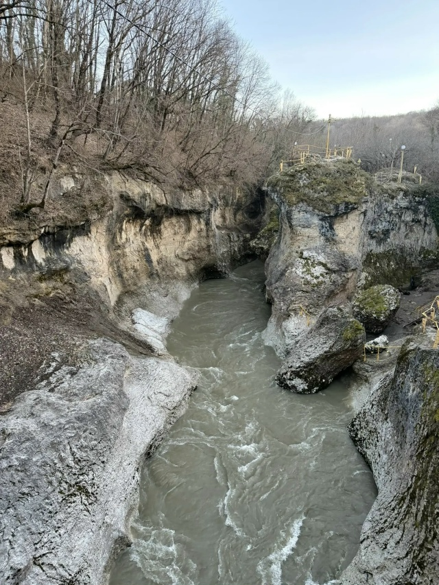
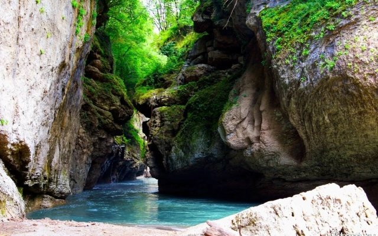
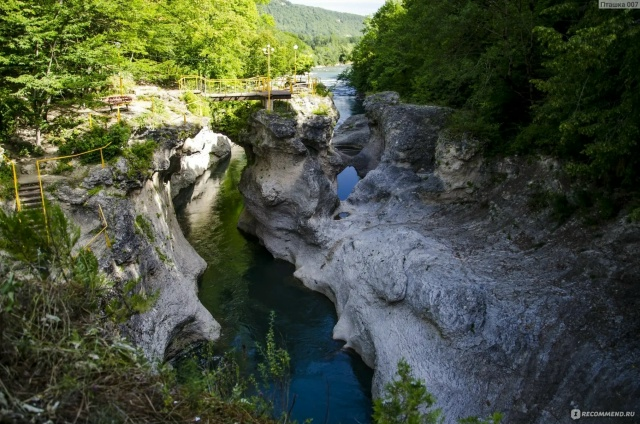

Узкий каньон реки Белой, где бурный поток прорезал скальную породу, создав один из самых живописных памятников Адыгеи
Хаджохская теснина протянулась на 400 метров. Это место, где бурная река прорезала в скале узкую щель шириной около 6 метров, а местами сужающуюся до 2 метров. Глубина каньона приближается к 40 метрам. Речка в этом узком ущелье сильно шумит, поэтому местные жители называют теснину «Шум».
Перед ущельем река спокойна, а сразу после него вода широко разливается, замедляя свой бег. Через каньон переброшен подвесной мост, откуда открывается головокружительный вид на бурлящую воду, пенящуюся порогами и закручивающуюся в водовороты. Скалы в результате выветривания принимают причудливую форму, а их верхние ярусы покрыты живописной растительностью.
Благоустроенные смотровые площадки и туристические тропы оборудованы в центральной части. Эта территория огорожена, вход на нее платный. Спуститься вниз можно по ступенькам с перилами, для отдыха предусмотрены скамейки, а по вечерам включаются фонари и прожекторы.
Лучшая точка для панорамных снимков
Причудливые формы выветренных пород
Лестницы, скамейки, вечернее освещение
Из-за постоянного гула бурлящей воды


Уникальное сочетание водной стихии, скальных образований и горной флоры создаёт особую среду обитания
В тёплое время года в ущелье обитает множество птиц, бабочек и ящериц, привлекаемых растительностью на скалах
Согретые солнцем верхние ярусы теснины покрыты живописными кустарниками и горными травами
Река пенится, спадает порогами и закручивается в водовороты, формируя уникальный микроклимат ущелья
Внушительные перепады высот создают естественную защиту для экосистемы и уникальный акустический эффект
Прогулка по верхнему краю занимает 1-1.5 часа, спуск к Сухому каньону — около 3 часов
От кассы на юге по улице Комсомольской через лес до спуска на дикий пляж в месте резкого сужения берегов.
Через мост на другой берег, на юг по тропе вдоль улицы Мира до конца ограждения. Спуск по крутому склону.
По Комсомольской и Посёлочной улицам до пересечения с Жуковского. Летом при низкой воде можно дойти до конца теснины.
По правому берегу на север до 1-го Майского тупика, откуда ведёт тропа к крутому спуску непосредственно в ущелье.
Прогулка вдоль верхнего края каньона. Занимает 1-1.5 часа, обеспечивает лучшие виды на бурлящую воду и скальные стены.
Более сложный маршрут, требующий около 3 часов. Проходит через менее благоустроенные участки с крутыми спусками.
Факторы, негативно влияющие на состояние памятника природы и окружающую среду
Интенсивный туристический поток на маршруте «Хаджохская теснина — Руфабго», включая тропу и родовую Черкесскую рощу, приводит к вытаптыванию и эрозии почв.
Проблемы с уборкой территории: посетители оставляют мусор и окурки, инфраструктура требует постоянного ухода и восстановления.
Транспортная нагрузка и бывшие карьеры (гипсовый завод) создают запылённость. Существуют риски строительства новых промышленных объектов II класса опасности.
Бурная река, подвесные мосты и причудливые скальные образования каньона




Транспорт, стоимость билетов, режим работы и контактные данные администрации